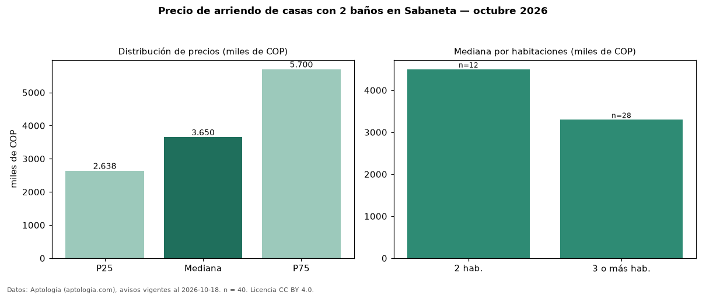

Precio de arriendo de casas con 2 baños en Sabaneta — octubre 2026
En Sabaneta, la mediana de canon mensual de casas con 2 baños es COP 3,65 millones, según 40 avisos vigentes. Eso es 45 % menos que la mediana de todas las casas en arriendo de Sabaneta (COP 6,60 millones, n = 160); este segmento reúne el 25 % de esos avisos. Por metro cuadrado, la mediana es COP 35.714/m² al mes (n = 39), 21 % por encima del conjunto de referencia (COP 29.524/m²). El área mediana anunciada es 110 m². El segmento con más oferta es el de 3 o más habitaciones (28 avisos, mediana COP 3,30 millones); pasar de 2 habitaciones a 3 o más habitaciones cambia la mediana −27 %. La mitad central de los avisos va de COP 2,64 millones a COP 5,70 millones (razón 2,2), una dispersión alta. El estrato más frecuente es 4 (57 % de los avisos con estrato). 80 % de los avisos con el dato declara parqueadero. Datos: Aptología (aptologia.com), CC BY 4.0 — https://www.aptologia.com/arriendo/sabaneta. Archivos: PDF, CSV con las cifras y gráfica PNG.

| Avisos únicos | 40 |
|---|---|
| Percentil 25 | COP 2.637.500 |
| Mediana | COP 3.650.000 |
| Percentil 75 | COP 5.700.000 |
| Mediana por m² | COP 35.714 |
Fuente: avisos vigentes de portales inmobiliarios recopilados por Aptología, deduplicados (mínimo 30 avisos únicos por celda). Precios pedidos, no cerrados. Fecha: 2026-10-18.